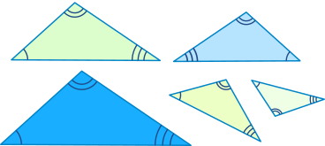
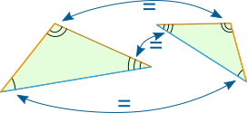
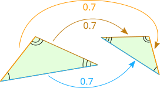
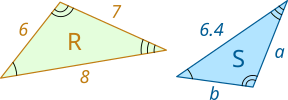
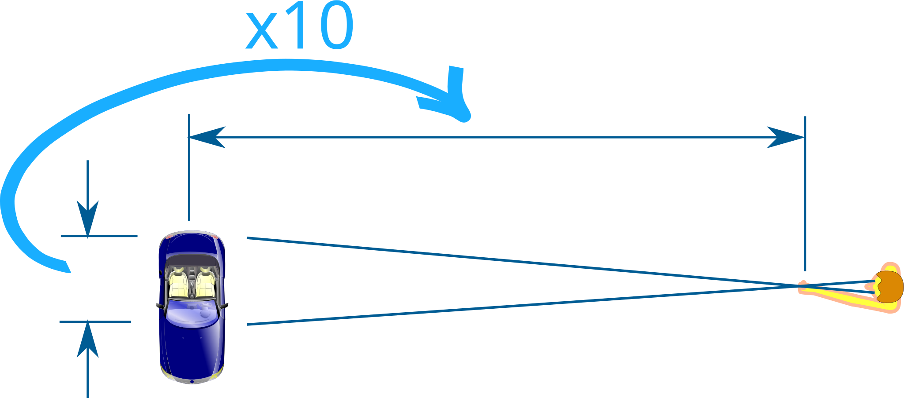

Similar Triangles
Two triangles are Similar if the only difference is size (and possibly the need to turn or flip one around).
These triangles are all similar:

(Equal angles have been marked with the same number of arcs)
Note: as well as different sizes, some of them are turned or flipped.
For similar triangles:

All corresponding angles are equal
and

All corresponding sides have the same ratio
Also notice that the corresponding sides face the corresponding angles. For example the sides that face the angles with two arcs are corresponding sides.
Corresponding Sides
In similar triangles, corresponding sides are always in the same ratio.
For example:

Triangles R and S are similar. The equal angles are marked with the same numbers of arcs.
What are the corresponding lengths?
- The lengths 7 and a are corresponding (they face the angle marked with one arc)
- The lengths 8 and 6.4 are corresponding (they face the angle marked with two arcs)
- The lengths 6 and b are corresponding (they face the angle marked with three arcs)
Calculating the Lengths of Corresponding Sides
We can sometimes calculate lengths we don't know yet.
- Step 1: Find the ratio of corresponding sides
- Step 2: Use that ratio to find the unknown lengths
Example: Find lengths a and b of Triangle S
Step 1: Find the ratio
We know all the sides in Triangle R, and
We know the side 6.4 in Triangle S
The 6.4 faces the angle marked with two arcs as does the side of length 8 in triangle R.
So we can match 6.4 with 8, and so the ratio of sides in triangle S to triangle R is:
6.4 to 8
Now we know that the lengths of sides in triangle S are all 6.4/8 times the lengths of sides in triangle R.
Step 2: Use the ratio
a faces the angle with one arc as does the side of length 7 in triangle R.
b faces the angle with three arcs as does the side of length 6 in triangle R.
Done!

Did You Know? Similar triangles can help you estimate distances.